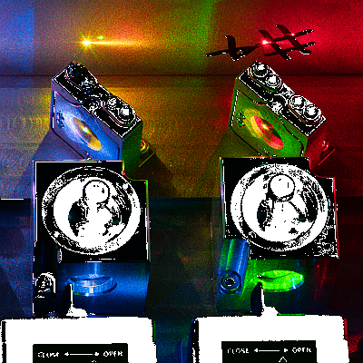 Instrumentation
Design and construction of bespoke optical
systems and microscopes tailored to meet researchers’
specific needs.
|
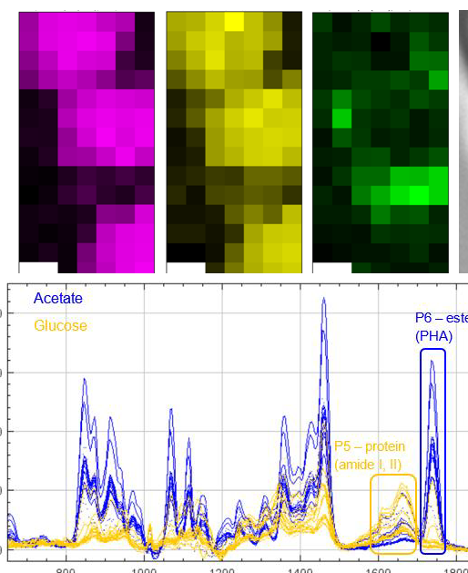 Methods development
Development of advanced imaging and
spectral analytics approaches to extract quantitative and
biologically and/or physically meaningful information from
complex systems.
|
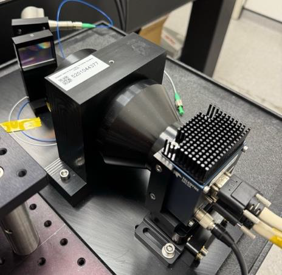 Overlapping projects
Projects involving both instrumentation and
methods development.
|
Instrumentation
CALIPSO - oblique plane illumination microscope for high-content organoid screening |
| Category: Instrumentation |
| Team: Mohammad Aalim KHAN, LEE Khee Leong, Sayyed Omar Kamal, Peter TÖRÖK |
| Collaborators: Jean-Baptiste SIBARITA (CNRS@CREATE), Virgile VIASNOFF (NUS), Veronique ANGELI (SHARE), Pierre-François LENNE (CNRS@CREATE) , Alfonso MARTINES-ARIAS (Cambridge University) |
| Funding: Intra-CREATE/NRF |
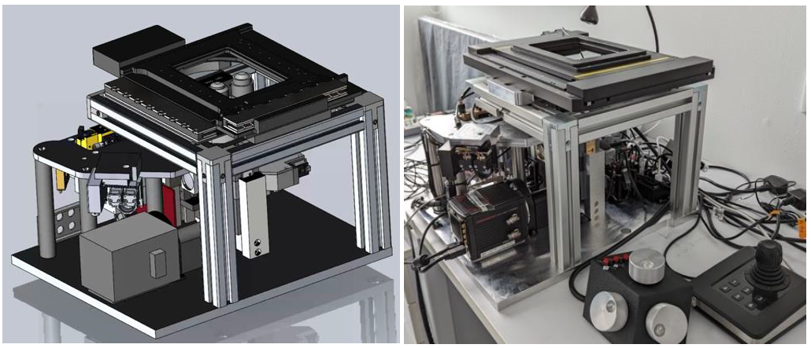 Motivation: Organoids are self-organising 3D stem-cell models with great potential for studying human biology and disease, but high-throughput, non-destructive testing is essential to assess their development. A light sheet microscope variant is a promising method to provide such assessment. Outcome: Our role in the consortium was to develop an industrial prototype comprising both optics and electronics. This resulted in a stand-alone platform for long-term 3D organoid imaging, a database of over 5,000 time-lapse–tracked organoids, an optimized AI workflow for quantitative morphodynamics analysis, and AI-based clustering software that predicted final organoid states from their live behavior. Potential applications: Drug development and developmental biology. |
|
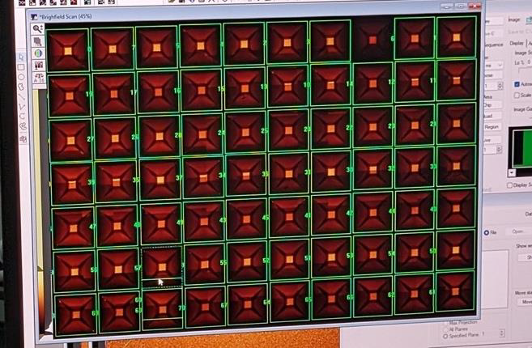 Method: We developed a prototype of a new generation of high content screening platform for simultaneous 3D live imaging of more than 1,000 organoids which relies on the single objective SPIM technique, which was extended to screen the cellular movements of developing gastruloids and liver organoids together with their differentiation state and extracellular matrix spatial distribution. |
Democratised digital ELISA reader |
| Category: Instrumentation |
| Team: Mohammad Aalim KHAN, LEE Khee Leong, Sayyed Omar Kamal, LUO Yong, Peter TÖRÖK |
| Collaborators: Quanterix Corp, USA |
| Funding: MOE RCE (IDMxS), NTU |
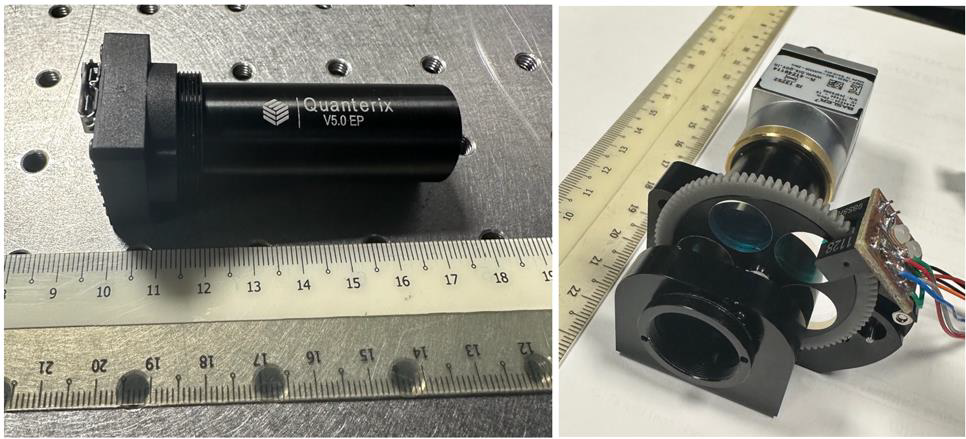 Motivation: Digital ELISA represents a major advance over conventional ELISA by enabling single-molecule protein detection rather than ensemble signal averaging, overcoming traditional sensitivity limits of 1pM. By isolating and digitally counting individual protein molecules in miniaturised reaction volumes, platforms such as Simoa (single molecule assay - bead-based assays) from Quanterix achieve 1aM sensitivity, allowing reliable detection of low-abundance biomarkers critical for early disease diagnosis and monitoring. However, existing digital ELISA platforms are expensive, non-portable and laboratory-bound, making them unsuitable for point-of-care use. Our work aimed at developing a miniaturised version of the Quanterix optical reader costing around SGD500 instead of the SGD80-100k of Quanterix’s original.Outcome: Our system was benchmarked successfully against Quanterix’s Simoa reader. Quanterix unfortunately shut down Simoa based activities in 2025 due to the company changing profile. Potential applications: A similar optical system can be used for a variety of low-cost assays including digital PCR. We are exploiting these applications in the planned SCLESE-HTX framework programme. |
|
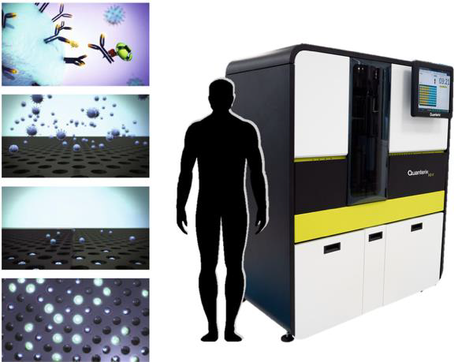 Method: We designed a freeform lens based optical system that we fabricated (optics, mechanics and electronics) completely in-house. We used injection moulded optical elements and a low cost camera instead of research grade sCMOS camera in order to reduce costs. In a later version, we included a low cost filter wheel to extend the operation of the system to a plurality of fluorescent beads. |
Head-mounted two-photon microscope for rodents |
| Category: Instrumentation |
| Team: Josiah CHONG Shau Poh , Mohammad Aalim KHAN, LEE Khee Leong, Sayyed Omar Kamal, LUO Yong, Peter TÖRÖK |
| Collaborators: Anna BARRON (LKCMedicine), Róbert SZIPÖCS (R&D Ultrafast Lasers Ltd., Wigner Research Centre for Physics, Budapest) |
| Funding: NTU LKCMedicine |
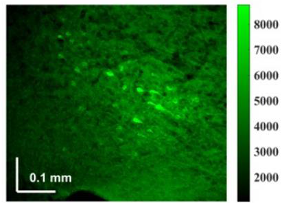 Motivation: Digital Head-mounted two-photon microscopes enable high-resolution imaging of neural activity deep in the rodent brain during free behaviour by miniaturising two-photon optics into lightweight, wearable devices for mice or rats. However, fibre-delivery of ultrafast laser pulses is difficult due to two main physical effects arising in optical fibres: nonlinearity (self-phase modulation due-to Kerr-nonlinearity) and dispersion (different propagation speeds in an optical waveguide at different wavelengths). One alternative is development of sub-picosecond pulse laser which experiences less pulse-broadening effect when being delivered in a fibre.Outcome: A custom-designed tuneable laser with sub-ps pulse width capable for wavelength-tuneable across 800-1100 nm, and suitable for fibre delivery to miniaturised two-photon microscope was designed and developed, making it well-suited for head-mounted microscopes used in freely moving rodents. Potential applications: The developed sub-picosecond laser minimizes pulse broadening during delivery through photonic-crystal fibre (PCF) making it well-suited for head-mounted two-photon microscopes used in freely moving rodents. |
|
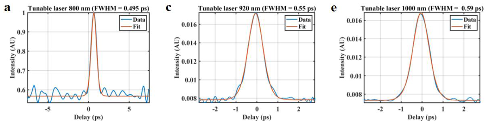 Method: We developed a 69 MHz, sub-ps Ti-sapphire laser optimized for fibre delivery in a LMA, double-clad, polarization maintaining optical fibre (P-25/250DC-PM, Thorlabs) meeting the requirements for a head mounted, scanning two-photon microscope. The laser can be operated at around 800 nm, 920 nm and 1000 nm determined by the high reflectance bandwidth of saturable absorber mirrors (SAM) applied for mode-locking of our laser. |
Microscope for targeted DNA damage |
| Category: Instrumentation |
| Team: Mohammad Aalim KHAN, LEE Khee Leong, Radek MACHAN, Sayyed Omar Kamal, Peter TÖRÖK |
| Collaborators: Kristijan RAMADAN (LKCMedicine) |
| Funding: NTU LKCMedicine |
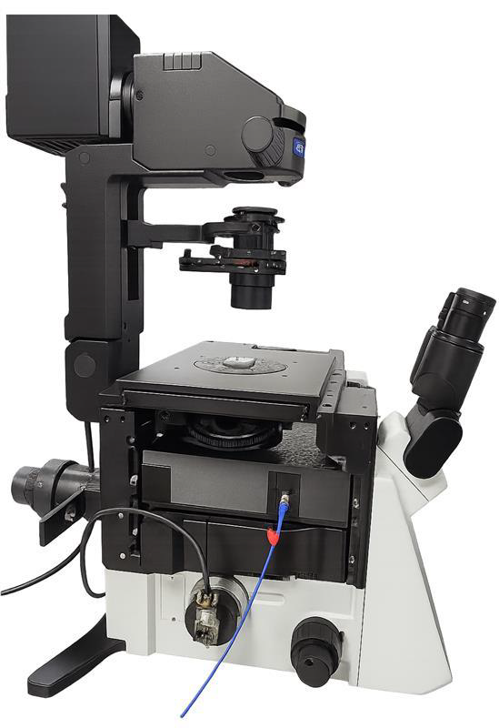 Motivation: Investigating how DNA is repaired after damage caused by ionising irradiation is important to aid our understanding of the mechanisms of cancer cell damage in radiation therapy as well as the processes underlying carcinogenic effects of radiation exposure. The ability to produce precisely controlled DNA damage in cells is critically for the study of DNA repair mechanisms. Outcome: A custom-built microscope equipped with a 405 nm laser scanning system was developed, enabling targeted induction of DNA damage within selected regions of the nucleus. Potential applications: The microscope will be used to produce precisely controlled DNA damage needed for studies of DNA repair. It is expected to contribute to cancer research conducted at LKCMedicine and potentially other schools and institutions in Singapore. |
|
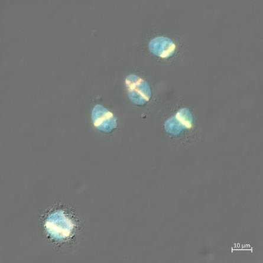 Method: For easier experimental implementation, ionising radiation can be replaced with non-ionising laser light. The system is based on an inverted microscope with a CMOS camera for widefield imaging. A 405 nm fibre-coupled laser is integrated through a custom sub-stage unit, where the beam is expanded and digitally scanned to position a sub-micron focus anywhere within a part of the objective’s field of view. |
Custom Raman and Brillouin confocal microscope |
| Category: Instrumentation |
| Team: Mohammad Aalim KHAN, LEE Khee Leong, Radek MACHAN, Sayyed Omar Kamal, Peter TÖRÖK |
| Funding: NRF National Research Infrastructure (NRI), NTU |
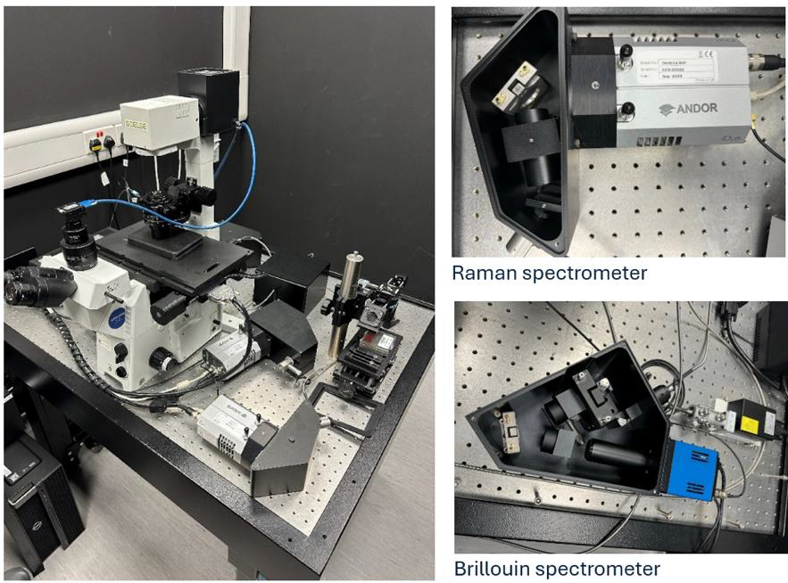 Motivation: Raman and Brillouin scattering are two forms of inelastic light scattering that can be used together for label-free, contactless, and non-destructive mapping of chemical and mechanical properties, respectively, across a wide range of specimens. Raman and Brillouin signals occur at different wavelengths, allowing simultaneous acquisition and making correlative Raman–Brillouin microscopy attractive.Outcome: An inverted confocal microscope capable of simultaneously detecting Raman and Brillouin spectra was developed through a combination of optical and mechanical design, software development, and prototyping. Potential applications: Virtually all branches of biomedical research. It can serve as a testbed for developing Raman- and Brillouin-based optical probes for clinical and environmental sensing. This system is unique in Asia and one of only two in the world. |
|
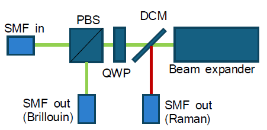 Method: The system is built on an inverted microscope. Its modular, fibre-connected architecture (laser, microscope, Raman spectrometer, Brillouin spectrometer) allows easy swapping of components with minimal optical realignment. Both spectrometers contain no moving parts, ensuring long-term mechanical stability. The microscope, built around a commercial inverted frame (Olympus, IX-71), contains a 561 nm laser for Brillouin and Raman scattering. Raman spectra are recorded by a custom-designed spectrograph with a CCD camera. The technical challenge in recording Brillouin spectra lies in the closeness of the Brillouin peaks to the peak of elastically scattered photons (Rayleigh peak), which is many orders of magnitude more intensive than the Brillouin peaks. This means that high spectral resolution together with efficient suppression of the Rayleigh peak are necessary. To meet this challenge, we use custom-designed common-path interferometric filters (two in a series) and a virtually imaged phase array (VIPA) spectrograph equipped with a scientific CMOS camera. The design is an improved version of a previously described setup [Karampatzakis A. et al. (2017) npj Biofilms Microbiomes 3, 20] and its detail can be found at our GitHub repository. |
Custom single photon sensitive light sheet microscope |
| Category: Instrumentation |
| Team: Mohammad Aalim KHAN, LEE Khee Leong, Sayyed Omar Kamal, Peter TÖRÖK |
| Collaborators: Thorsten WOHLAND (NUS) |
| Funding: MOE |
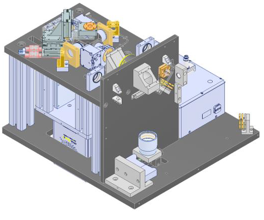 Motivation: Advances in low-noise camera technology, especially qCMOS sensors, now allow single-photon–level detection and greatly expand the information that can be extracted from fluorescence imaging, including molecular dynamics and sub-diffraction details. To fully exploit the spatio-temporal correlations in photon signals, both improved computational methods and an imaging system optimized for high-speed, high-contrast data collection were required. To meet this need, we developed a widefield light sheet microscope capable of rapid, optically sectioned imaging, enhanced with dual detection objectives to boost fluorescence collection. Multiple excitation wavelengths were also incorporated to probe interactions between different fluorophores through cross-correlated photon signals.Outcome: A highly sensitive and efficient light-sheet microscope platform was developed. The system enables simultaneous dual-view imaging with enhanced photon collection and supports advanced experimental modalities such as multi-color excitation and optogenetic stimulation. Potential applications: This light sheet microscope uniquely combines high light-collection efficiency with single-photon-sensitive qCMOS detection, enabling studies of the information limits in single-molecule fluorescence experiments such as FCS and super-resolution imaging methods like SOFI. |
|
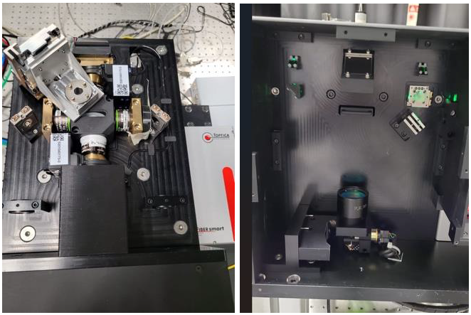 Method: FA single photon sensitive light sheet microscope that can both detect and illuminate from either side of the sample was designed and constructed. The system is using a piezo driven 4-dimensional stage to hold the sample in a purpose made cuvette and a single photon sensitive camera whose field of view is split to show both imaging sides simultaneously. The system is also equipped with scanned optogenetic capabilities via a pulsed laser illumination. |
Solution for fast switching of channels in widefield microscopy |
| Category: Instrumentation |
| Team: LEE Khee Leong, Radek MACHAN, Sayyed Omar Kamal |
| Funding: NTU |
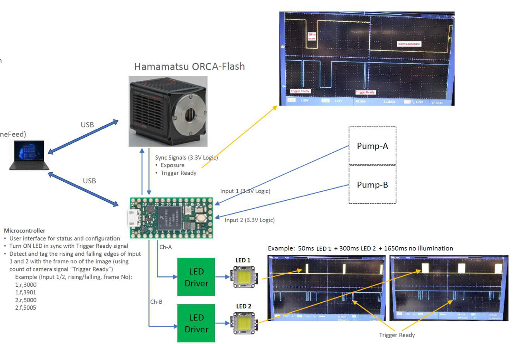 Motivation: Microscopy experiments that track fast processes and require correlation across channels (e.g., fluorescence and transmitted light) need rapid switching with minimal delay. This was once difficult due to mechanical filter wheels and shutters. Although modern LED light sources allow microsecond-scale switching, most commercial microscopes still introduce delays—especially between fluorescence and transmitted light—due to limited hardware synchronization and reliance on legacy mechanical components.Outcome: A simple to use and affordable solution for camera and LEDs synchronisation that bypasses such limitations in suitable commercial microscope systems was developed. Potential applications: An application that will benefit from this solution is traction force microscopy (TFM) conducted by the group of Asst Prof Han Endao (SPMS). In their experiments the movement of cells (observed in transmitted light) is correlated with the displacement of fluorescent beads embedded in the matrix to derive forces exerted by the cells on the matrix. |
|
Method: Synchronisation is controlled by a microcontroller (Arduino Teensy 4.0) running custom software. The controller sends trigger pulses to both the camera and LEDs, enabling LED alternation on consecutive camera frames. This approach eliminates delays between frames, making acquisition speed dependent only on the camera exposure time. Additionally, the microcontroller can receive logic pulses from external devices, such as a perfusion pump, and record their timing in units of camera frames from the start of acquisition. |
Tilting microscope for intravitalfluorescence imaging |
| Category: Instrumentation |
| Team: Mohammad Aalim KHAN, LEE Khee Leong, Radek MACHAN, Sayyed Omar Kamal, Peter TÖRÖK |
| Collaborators: TAN Hwei Ee (LKCMedicine) |
| Funding: NTU LKCMedicine |
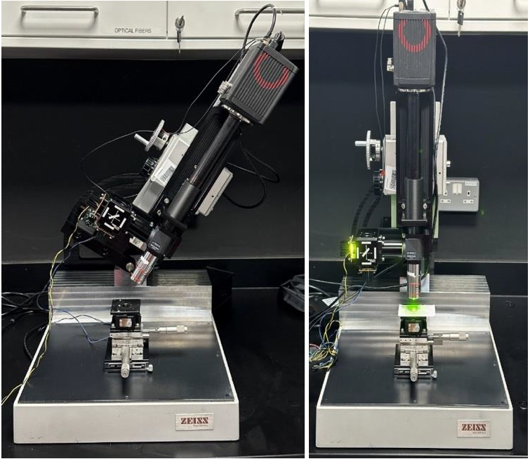 Motivation: Traditional microscope stands are often not suitable for intravital imaging during surgeries on animal models as the surgical wound is not necessarily facing straight up. At the same time mounting the animal in stereotactic frames for precise positioning could hinder the surgical procedure. It is therefore more convenient to have the possibility to tilt the microscope with respect to the animal, rather than the animal with respect to the microscope.Outcome: A tilting microscope was designed and constructed for fast 2-colour widefield epifluorescence intravital imaging of rodents. Potential applications: The microscope is used by the group of Asst Prof Tan Hwei Ee for two-colour fluorescence intravital imaging of mice during surgeries forming part of research of the gut-brain neuronal circuits. The microscope can be potentially used in also in other projects requiring intravital fluorescence imaging of mice or other small animal models. |
|
Method: We developed and built an epifluorescence microscope capable of tilting in the range of ±90˚ from the vertical axis. A magnetically mounted positioning stage provides fine horizontal and vertical adjustment of the animal relative to the tilted microscope. The system uses a long-working-distance 5x objective, custom green/red LED excitation, and an sCMOS camera, with fast two-colour imaging enabled by fixed dual-band optics and LED-only channel switching. Camera control is handled by Micro-Manager, while a Teensy-based microcontroller synchronizes LED switching with camera exposures and logs external device triggers in frame-based timing. The custom microscope design enabled the integration of additional functionalities essential for its intended application, namely rapid switching between fluorescence channels and synchronization with a perfusion pump. |
Two-photon microscope with optogenetics for neuroscience applications |
| Category: Instrumentation |
| Team: Josiah CHONG Shau Poh , Mohammad Aalim KHAN, LEE Khee Leong, Radek MACHAN, Sayyed Omar Kamal, Peter TÖRÖK |
| Collaborators: Tsukasa KAMIGAKI, Suresh Jesuthasan, Anna BARRON (LKCMedicine) |
| Funding: NTU LKCMedicine |
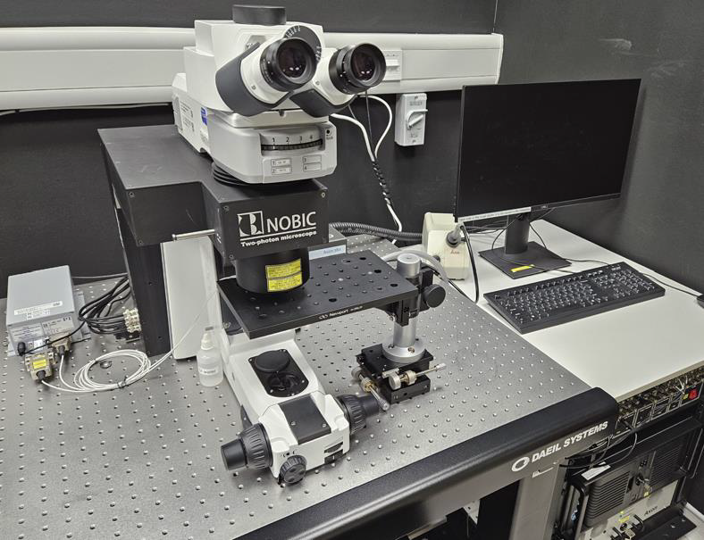 Motivation: Two-photon microscopy (2PM) is the method of choice for sub-cellular imaging of rodent’s brain at penetration depth up to 1 mm with unprecedented imaging contrast. Recent advent of optogenetics opened opportunities for neural imaging and manipulation at single-cell level. Nevertheless, 2PM imaging with simultaneous optogenetics excitation is extremely expensive and usually cumbersome.Outcome: Two-photon microscopy (2PM) is the method of choice for sub-cellular imaging of rodent’s brain at penetration depth up to 1 mm with unprecedented imaging contrast. Recent advent of optogenetics opened opportunities for neural imaging and manipulation at single-cell level. Nevertheless, 2PM imaging with simultaneous optogenetics excitation is extremely expensive and usually cumbersome. Potential applications: The custom-built two-photon microscope provides a cost-effective platform for rodent and zebrafish neuroscience studies while maintaining high research performance. |
 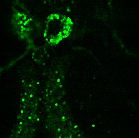 Method: We designed and built a two-photon microscope that could perform simultaneous two-photon imaging and one- or two-photon optogenetic excitation of cortical circuits in mouse brain. The microscope is equipped with two separate pulsed lasers operating at 920nm and 1060nm, that can be switched for simultaneous imaging/optogenetics. |
Zebrafish tracking mesoscope |
| Category: Instrumentation |
| Team: Mohammad Aalim KHAN, LEE Khee Leong, Sayyed Omar Kamal, Peter TÖRÖK |
| Collaborators: Caroline WEE (Institute of Molecular and Cell Biology - A*STAR), Suresh Jesuthasan (LKCMedicine) |
| Funding: A*STAR |
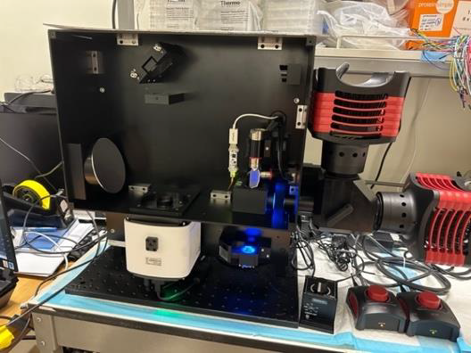 Motivation: Neuronal activity in zebrafish is typically imaged in immobilised, anaesthetised animals to minimise motion. While this strategy has been highly effective for mapping neural circuits, it precludes investigation of the neural dynamics. Imaging freely swimming zebrafish remains a major technical challenge, as conventional microscopes offer only a limited field of view at high resolution. This fundamental trade-off makes it difficult to capture a sufficiently large observation volume while preserving the spatial resolution required to localise and quantify brain activity in an unrestrained animal.Outcome: We delivered an integrated dual-system microscope that simultaneously tracks zebrafish in 3D and performs brain imaging. The cost of the entire system excluding the camera was less than SGD5k. Potential applications: Although currently it is not possible to record the 100 billion neurons in the human brain, small animals like zebrafish larvae are good models to study nearly all neurons. However, since many natural behaviour involve movement, existing imaging methods cannot yet capture brain activity in fine detail during motion. Our microscope will permit to develop more thorough understanding of neural behaviour of the entire brain. |
|
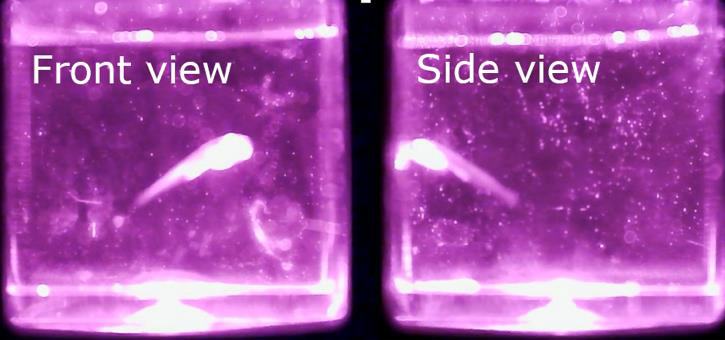 Method: The microscope we designed and built has two separate parts in a single setup: one tracking the 3D movement of the zebrafish and one imaging the brain of the object. The 3D tracking is achieved by two IR microscopes installed in orthogonal orientation such that analysing the two images they provide the fish’s 3D location can be determined in unambiguously. The second system is a long working distance, high resolution microscope whose field of view can be adjusted by means of a pair of high-speed galvo scanners and an electrically tuneable lens. The system has two high power LED sources to provide the illumination for the high-resolution microscope. |
Methods development
AI-based point-spread function (PSF) recovery |
| Category: Methods development |
| Team: YOW Ai Ping, Peter TÖRÖK |
| Collaborators: Quanterix Corp, USA |
| Funding: MOE |
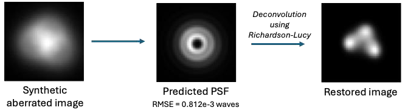 Motivation: In optical imaging systems, the point-spread function (PSF) characterises how a point source is mapped from object to image plane. Accurate knowledge of the PSF is essential for image restoration and deblurring. However, in non-shift invariant systems, where the PSF varies across the field of view, direct measurement is challenging. Hence, various blind PSF recovery methods are proposed to estimate the PSF directly from observed images without prior knowledge, enabling improved image restoration in complex optical systems. Outcome: The trained model achieved an average object recovery accuracy of of 2.928x10-3 (MSE) and it could also retrieve the field dependent PSF. Potential applications: The main application of this method is at low-cost optical systems where the quality of the optical system cannot be guaranteed. This way showing the optical system a simple calibration chart, it can self-calibrate. |
|
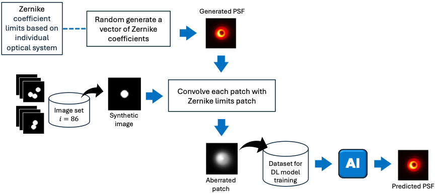 Method: We numerically generated PSFs with varying amounts of aberrations of a given optical system at random locations within its field of view. Simultaneously, numerically generated ground truth objects were convolved with the aberrated PSFs to simulate aberrated images for deep learning training. |
AI-based Raman spectral fingerprinting of bacteria and fungi |
| Category: Methods development |
| Team: YOW Ai Ping, Peter TÖRÖK |
| Collaborators: Scott RICE and Sujatha SUBRAMONI (SCELSE, NTU) |
| Funding: SCELSE |
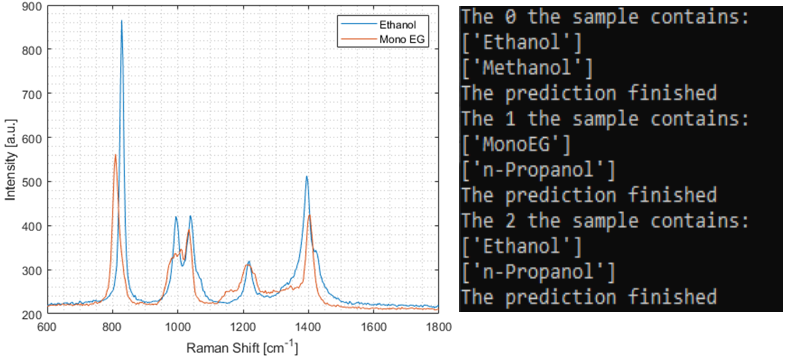 Motivation: Raman spectral fingerprints have proven to be a powerful tool for non-invasive microbial strain identification. Through inelastic scattering, photons exchange energy with molecular vibrational modes, producing spectra that uniquely characterise the chemical composition of samples. However, spectral measurements often correspond to mixtures of various components. Thus, interpreting these spectra to retrieve constituent components and corresponding concentrations remains a significant challenge. Outcome: The trained CNN model is tested to distinguish between two chemically similar compounds, ethanol and mono ethylene glycol. Although their vibrational spectra are similar, the trained model can readily distinguish between these two compounds. Furthermore, the model can also distinguish the compounds within a mixture of other hydrocarbons such as methanol and n-Propanol. Potential applications: The proposed method can be integrated into our in-house built Raman spectrometer microscope, enabling unmixing of Raman spectra from mixed bacterial species or other mixed chemical signature compounds. |
|
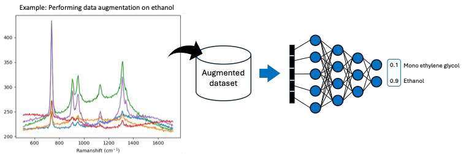 Method: Machine learning, in particular, convolutional neural network (CNN) can be applied to automatically distinguish the presence of components in a sample. To do so, the spectra of pure substances are first measurement. Thereafter, data augmentation including background addition, changing amplitude and tilting is performed on the measured spectra. The augmented dataset is then used to train the CNN model, enabling accurate identification of Raman spectral fingerprints. |
AI for microscope objective lens design |
| Category: Methods development |
| Team: YOW Ai Ping, Peter TÖRÖK |
| Collaborators: Carl Zeiss, Germany |
| Funding: NTU |
 Motivation: Selection of a starting-point design (SPD) is a crucial step in lens design, as it strongly influences the final design outcome. Traditionally, SPD selection relies on the optical designer’s knowledge and experience, but adherence to established practices can limit flexibility and make suitable SPD choice challenging. Data-driven methods have been proposed to automate SPD generation, yet the generated designs are inherently limited to the configurations seen during training, lacking exploration within the solution landscape. Outcome: Current results demonstrate that, using only first principle optical design, the RL agent is capable of generating a variety of suitable initial microscope objective lens designs, facilitating rapid convergence in the optimisation process. Potential applications: The proposed RL-based method can be applied to the design of complex optical systems and accelerate the development of optical instruments by enabling rapid exploration of optimal lens configurations beyond conventional heuristics. |
|
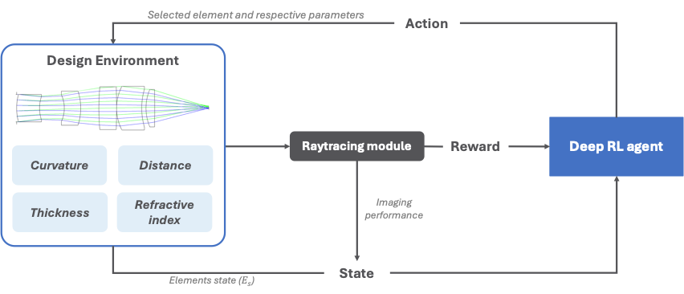 Method: Reinforcement learning (RL), a machine learning method that enables dynamic learning of optimal actions through interaction with the environment, is employed to generate SPDs for microscope objective lenses. The RL agent iteratively selects optical elements and parameters based on the current design state, with each choice evaluated via a reward signal reflecting its impact on imaging performance. By exploring the solution space beyond conventional heuristics and data-driven approaches, the RL agent can identify optimal SPDs even for complex lens systems. |
Monitoring of bacterial metabolism by Raman micro-spectroscopy |
| Category: Methods development |
| Team: Radek MACHAN |
| Collaborators: Rohan WILLIAMS and Irina BESSARAB (SCELSE, NTU) |
| Funding: SCELSE |
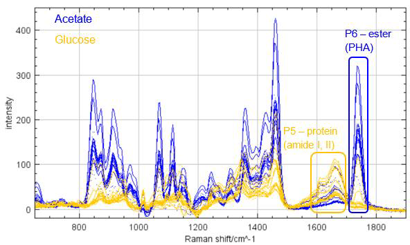 Motivation: Defluviicoccus vanus is a model organism for studying molecular eco-physiology in wastewater bioprocesses and variable environmental conditions. Genomic analysis shows pathways for energy storage as glycogen and polyhydroxyalkanoates (PHA). Raman microspectroscopy was used to investigate how cultivation conditions affect the phenotype of D. vanus through label-free quantitative analysis of storage compounds in individual live cells, identifying compounds produced under different carbon sources and monitoring their changes over time. Outcome: The results showed that glycogen was the dominant storage compound when glucose was used as the carbon source, while PHA prevailed with acetate. Storage compound levels progressively decreased over time after plating, reflecting carbon source depletion. Polyphosphate Raman peaks were occasionally detected in both conditions, revealing an unexpected additional D. vanus phenotype. Potential applications: The project established a methodology for single-cell quantitative analysis of the presence of metabolites of interest in bacterial cultures and can be translated to other model microorganisms and other metabolites of interest. |
|
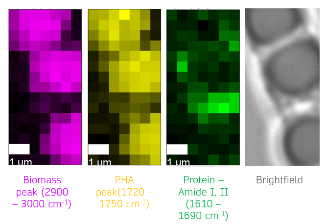 Method: Raman micro-spectroscopy was performed at a custom confocal micro-spectroscope system built by NOBIC for SCELSE. It was used to identify the chemical composition of individual live bacterial cells in samples cultured with different carbon sources (glucose or acetate) at different times. Raman spectral mapping was performed in selected cells to visualise the spatial distribution of the storage compounds present. |
Overlapping projects
Adaptive optics for one- and two-photon microscopy |
| Category: Instrumentation Methods development |
| Team: Mohammad Aalim KHAN, Peter TÖRÖK |
| Collaborators: Carl PATERSON (Imperial College London, UK) |
| Funding: NTU |
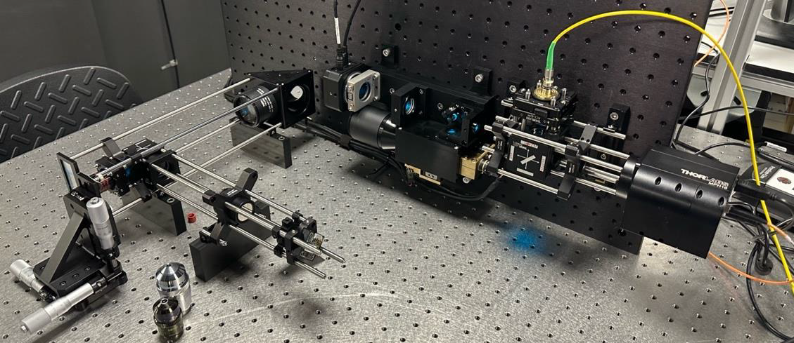 Motivation: Adaptive optics is mostly used in astronomical imaging in order to compensate for atmospheric turbulence where the fact that a star can be considered as a point object is often utilised to achieve real-time compensation. In microscopy adaptive optics has been around for about 20 years with mixed results. In scanning microscopy, it is difficult to compensate for aberrations from pixel to pixel as this would require high speed adaptive optics which is extremely expensive. Solutions that enable low speed and therefore cost adaptive systems are not available.Outcome: The system was first demonstrated on the one-photon fluorescence microscope we built and is currently being implemented on our two-photon microscope. Potential applications: The adaptive system will be usable on both one- and two-photon optical microscopes. In particular, it is planned to work as a plug-in module in our in-house manufactured two-photon microscopes. |
|
Method: We designed and built an adaptive optical system that can be used on both one and two photon optical microscopes. The optical system possesses a low speed adaptive element (deformable mirror) without the conventional wavefront sensor. It is therefore not possible to correct for aberrations at each point as the system scans from pixel to pixel. However, it is possible to set the deformable mirror to a shape when, even though the point spread of the system at many sample locations is possibly worse than it would be without the adaptive element, the image so obtained contains more information (in terms of Fischer information) than the uncorrected system. The high information content image can hence be calculated from the intensity data obtained via scanning. This can be made faster using trained AI networks, such as CNNs. |
Hand-held wound imager for Z-DNA detection |
| Category: Instrumentation Methods development |
| Team: FOO Yong Hwee, Mohammad Aalim KHAN, LEE Khee Leong, Sayyed Omar Kamal, Peter TÖRÖK |
| Collaborators: Joseph LO (Woodlands Hospital), Enming YONG (Tan Tock Seng Hospital), Peter DRÖGE (LambdaGen Pte. Ltd.), Jeffrey HONG (NTU) |
| Funding: A*Star MedTech, NTU via NTUitive GAP funding |
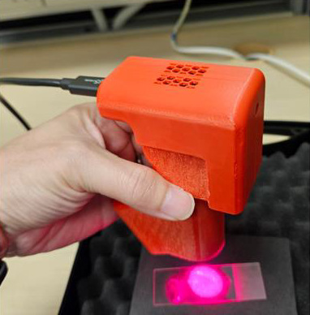 Motivation: Diabetic foot ulcer (DFU) is a severe complication of diabetes, and up to 20% of DFU patients undergo amputation. Debridement is performed to remove infected tissue; however, there is currently no clinical method to detect residual biofilm within tissue deemed healthy following debridement. Undetected biofilm can lead to persistent infection and poor wound healing, significantly increasing the risk of limb amputation. While imaging devices exist that can detect bacterial cells, they are limited to identifying cells rather than biofilms and typically require operation in the dark, which is not practical in a clinical setting.Outcome: A portable, hand-held wound imaging device capable of operating under ambient lighting conditions and providing high sensitivity was developed to detect biofilms in tissue following debridement. We also carry out research to the nature and organisation of biofilms which in turn informs the optimisation of our imaging strategies and supports the development of more targeted biomarkers. Potential applications: Combined with the antibody topical solution, the portable, hand-held wound imaging device will allow clinicians better wound care by determining whether debridement has been adequately performed, improving treatment Outcome and reducing the incidence of limb amputations in diabetic patients. |
|
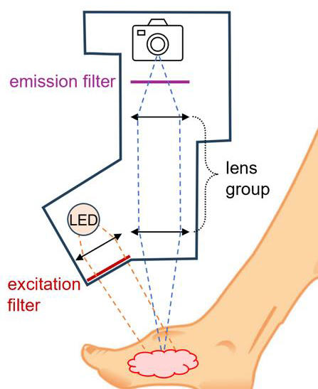 Method: After the debridement procedure, an antibody conjugated to a near-infrared fluorescent dye is applied to the wound, where it selectively binds to a biomarker associated with biofilms. A handheld imaging device, equipped with separate illumination and detection arms, then assesses the wound using fluorescence imaging under ambient lighting conditions. The resulting signal indicates the presence or absence of biofilm, enabling an objective evaluation of debridement effectiveness. |
Hyperspectral OCT for ultra-high resolution retinal imaging |
| Category: Instrumentation Methods development |
| Team: Josiah CHONG Shau Poh , Mohammad Aalim KHAN, Peter TÖRÖK |
| Collaborators: Leopold SCHMETTERER (SERI) and Jonathan CROWSTON (Duke-NUS Medical School) |
| Funding: CRP NRF |
| Motivation: Optical
coherence tomography (OCT) is the standard non-invasive technique
for high-resolution retinal imaging. While clinical OCT uses
near-infrared light (around 800nm), visible-light OCT offers
higher resolution and contrast. Hyperspectral OCT of the retina
spanning visible and near-infrared wavelengths can improve
spectroscopic biomarkers of retinal disease while preserving high
axial resolution. However, prior systems covering this broad range
have been limited by the challenge of designing a spectrometer
with adequate broadband performance. Outcome: An ultrahigh-resolution OCT system spanning both visible and near-infrared wavelengths was developed to enable in vivo hyperspectral imaging of the mouse retina. We demonstrated ultra-broadband mouse retinal structural imaging in vivo and simultaneous visible and NIR waveband visualization of axon fibre bundle within retinal nerve fibre layer for the first time. Potential applications: Our system opens new avenues for enhanced functional imaging of mouse retina. |
|
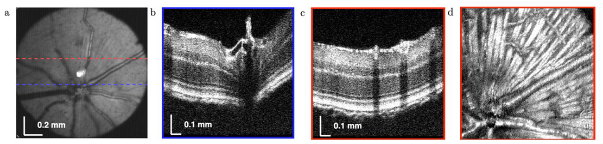 Method: We designed an ultra-broadband OCT that advances the state-of-the art in two major aspects: the design and implementation of a broadband spectrometer employing a 4k-pixel line camera achieving a spectral range of greater than 450nm with a central wavelength of 680nm; and an achromatised imaging system that minimises aberrations in the visible-near-infrared wavelength range for imaging mouse retina. The system provides an axial imaging range greater than 0.67mm within retina with a larger than 40° field angle. |
Reader for rapid diagnostic tests (COVID-19) |
| Category: Instrumentation Methods development |
| Team: Mohammad Aalim KHAN, Peter TÖRÖK |
| Collaborators: Peter PREISER (SBS, NTU), CHEN Change Loy (NTU), Hadley SIKES (MIT) |
| Funding: NRF, NTU |
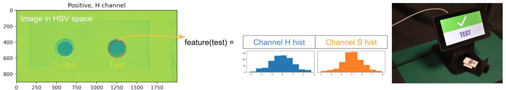 Motivation: To enable rapid, accessible COVID-19 screening during the pandemic, there was an urgent need for low-cost tests that could deliver results within minutes, in contrast to slower and more expensive PCR-based methods. A saliva-based colorimetric assay developed at MIT offered a promising alternative, but its colour-based readout was subjective to the observer.Outcome: We improved rapid testing by creating an easy-to-use ML-powered reader that objectively interprets colour changes. The developed prototype was fabricated in several versions and used in BSL3 laboratories, mostly in A*STAR, to read assays. Potential applications: We improved rapid testing by creating an easy-to-use ML-powered reader that objectively interprets colour changes. The developed prototype was fabricated in several versions and used in BSL3 laboratories, mostly in A*STAR, to read assays. |
|
Method: The project delivered a reader based on Raspberry Pi computer and camera with integrated optics and ML-based colour recognition to detect colour changes of paper assays. Each individual sample is labelled with a QR code, which is read by the camera to enable accurate identification and tracking during analysis. |
Thermally excited optomechanics |
| Category: Instrumentation Methods development |
| Team: Josiah CHONG Shau Poh , Peter TÖRÖK |
| Collaborators: Brendan KENNEDY (UWA, Australia), Peter MUNRO (UCL, UK), Carl PATERSON (Imperial College London, UK), Paulo BERTOLO (SC3DP, NTU) |
| Funding: NTU |
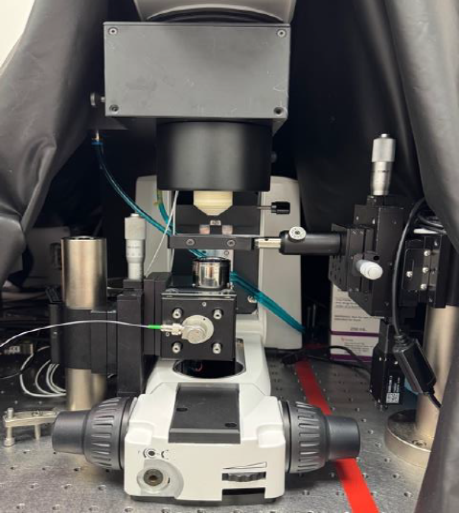 Motivation: Many arterial stents fail due to compliance mismatch between the stent and arterial tissue. Arteries consist of three layers, tunica intima, tunica media, and tunica adventitia, each with distinct mechanical properties, which also vary between patients and over time. Although new stents are being developed using techniques such as 3D printing and melt electrowriting, the mechanical properties of these layers in healthy and diseased tissue remain poorly understood. Better characterisation would enable the design of more physiologically relevant and potentially patient-specific stents.Potential applications: The principle, if proven, can be used in side blood vessels as a part of an endoscope to map compliance of arteries before surgery, stenting or grafting. |
|
Method: Brillouin microscopy is widely used to measure biomechanical properties of biological samples, but it is highly sensitive to sample hydration levels. Optical coherence elastography provides more reliable measurements, however it requires mechanical stimulation of the sample. In this project, we explore using thermal instead of mechanical stimulation by inducing localised heating via two-photon absorption of pulsed laser light. The resulting temperature change is measured using an optical coherence tomograph to probe micromechanical properties. We are currently performing proof-of-concept studies on phantoms and correlating the results with Brillouin spectroscopy. |
BACK TO TOP